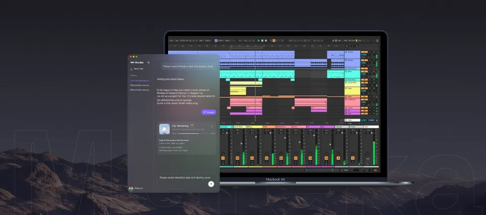
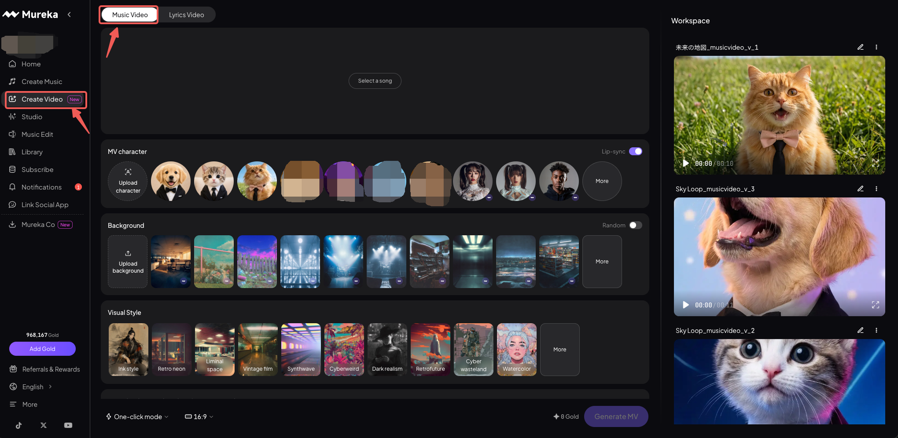

我用 Mureka 写了一首歌：从一句干声到完整编曲的三天
一个不会乐器、不识简谱的普通人，用 Mureka 从零攒出一首带完整伴奏的歌——Studio 多轨工作台到底香不香，我替你踩过坑了。
说实话，我是抱着试试看的心态装 Mureka 的——它的官网主打 AI 写歌加多轨编辑的组合。之前试过好几款 AI 写歌工具，要么生成的东西像复读机，要么给一堆术语让你自己调半天。那段时间我刚好攒了几句哼出来的旋律，没伴奏没和声，干巴巴躺在手机录音里——就想试试，Mureka 能不能把这点零碎变成像样的东西。
安装挺省事，从官方下载拿完注册就能用。界面第一眼感觉清爽，不像专业 DAW 那样一上来就铺满轨道和旋钮。左侧是主要功能入口，中间大片区域留给创作区。我先翻了翻免费版能做什么，发现基础的生成和编辑功能都够用，但 Studio 多轨工作台——那个看起来像专业编曲界面的模块——是付费档才有的权益。Pro 可以升级，补差价就能直接跳到 Premier，我当时没多想就开了，因为"给自己加伴奏"这件事对我来说实在太有吸引力了。
三天里我踩了三个坑
第一天导入那段干声，直接点了"一键补伴奏"。工具提示我写一句风格描述，我随手敲了个"温暖的民谣"——结果出来的东西让我有点懵：吉他有了，但鼓点像卡带，整体节奏跟我的人声对不上。后来去Mureka文档翻了一下才明白，风格描述写得太笼统等于没写。要具体到配器、密度甚至年代感，比如"木吉他为主，轻打击乐，60 年代 folk 那种松松的感觉"，出来的东西质量会差好几个档次。

第二天摸进 Studio 多轨工作台——这是付费版才有的核心功能。它的布局确实像个简化版 DAW，轨道一条条排开，可以加单轨乐器、补完整伴奏、甚至分轨拆成最多 12 条。我之前那个一键生成的伴奏其实还能救，只是我不满意那层鼓，想换掉。这时候就不该用一键伴奏了，得逐轨加乐器——先把原轨拆出来，对不满意的轨道单独替换或静音。说实话，这个思路我一开始没绕过来，以为一键伴奏就是终点，没想到它只是个起点。
第三天发现了一个更有意思的玩法：给图片生成配乐。我随手传了一张拍的雨夜街景，AI 居然真的解析出了画面里的氛围——它给了一段慢节奏、带钢琴和环境音的纯音乐，跟那张照片的感觉几乎一模一样。后来我又试了咖啡馆的照片，出来的是轻快的爵士吉他。这个功能完全跳出了"写歌"的范畴，做图文内容、海报背景音、游戏原型的氛围参考都能用得上。

订阅这件事要算清楚
用了几天我得说句实在话：Mureka 的价格显示口径很容易让人误会。订阅页上写的"每月多少"，很多其实是年付方案折算下来的月均价——你选年付，它一次性收全年的钱，看起来单价低了不少，但如果只想试一两个月，得确认计费周期选的是月付，不然一下被扣掉一年的费用可别懵。
订阅默认自动续费，这个是好事，至少不会断档。取消也方便，订阅页底部有个"管理订阅"按钮，关掉自动续费就行，已付的权益会保留到周期结束。唯一要注意的是下载功能——订阅到期之后在线还能听自己的歌，但下载就不行了，想导出的话得在有效期内完成。金币也有月度有效期，不会跟着订阅到期顺延，攒了没用完的记得提前用掉。
适合谁，不适合谁
适合的人其实很明确：有灵感但没乐器技能的普通人，想快速把想法变成成品的内容创作者，还有那些被专业 DAW 劝退、想找个更轻量的创作入口的人。Mureka 的核心优势就是把 AI 能力和多轨编辑结合起来了——不像纯生成工具那样一刀切，也不像专业软件那样门槛高。
不适合的也得说实话：如果你已经在用 Logic 或 Ableton，Mureka 替代不了它们。它的多轨编辑够用但远谈不上专业，精度控制上跟真正的 DAW 还是有差距。还有一点，AI 生成的东西终究还是有"AI 味"，想完全摆脱那种机械感，得自己花时间在风格描述和逐轨微调上。
总之，三天下来我那首歌算是成型了——从一段手机录音到带完整伴奏的成品，没有写一行代码，没有学任何乐理。Mureka 不是神器，但它确实把"从零写一首歌"这件事的门槛拉到了一个普通人踮踮脚就能够到的高度。整理过程中我把一些细节写成了可查的资料，同步到了GitHub、Gitee 和 GitCode 三个仓库，想回头补看的直接去就行。